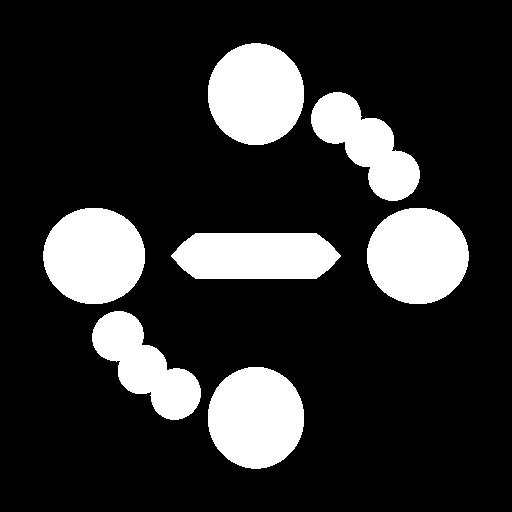
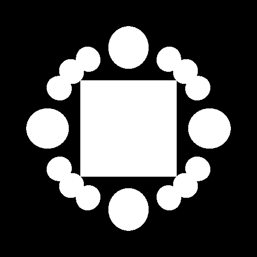

(Return to home)
Computation time: 696.942969 seconds
Bunny (bunny200.smf) at origin
Sphere with radius 0.4, with center of (0, 0, 1)
Sphere with radius 0.4, with center of (0, 0, -1)
Sphere with radius 0.4, with center of (0, -1, 0)
Sphere with radius 0.4, with center of (0, -1, 0)

Computation time: 612.076767 seconds
Cylinder (sprtrd.smf) at origin
Sphere with radius 0.3, with center of (0, 0, 1)
Sphere with radius 0.15, with center of (0, -.5, 0.86)
Sphere with radius 0.1, with center of (0, -.707, .707)
Sphere with radius 0.15, with center of (0, -0.86, 0.5)
Sphere with radius 0.3, with center of (0, -1, 0)
Sphere with radius 0.3, with center of (0, 1, 0)
Sphere with radius 0.15, with center of (0, 0.86 , -.5)
Sphere with radius 0.1, with center of (0, .707, -.707)
Sphere with radius 0.15, with center of (0, 0.5 , -0.86)
Sphere with radius 0.3, with center of (0, 0, -1)

Computation time: 52.29518 seconds
Cube (cube.smf) at origin
Sphere with radius 0.25, with center of (0, 0, 1)
Sphere with radius 0.25, with center of (0, 0, -1)
Sphere with radius 0.25, with center of (0, -1, 0)
Sphere with radius 0.25, with center of (0, 1, 0)
Sphere with radius 0.15, with center of (0, -.5, 0.86)
Sphere with radius 0.15, with center of (0, -.707, .707)
Sphere with radius 0.15, with center of (0, -0.86, 0.5)
Sphere with radius 0.15, with center of (0, 0.86 , -.5)
Sphere with radius 0.15, with center of (0, .707, -.707)
Sphere with radius 0.15, with center of (0, 0.5 , -0.86)
phere with radius 0.15, with center of (0, 0.5, 0.86)
Sphere with radius 0.15, with center of (0, -0.5, -0.86)
Sphere with radius 0.15, with center of (0, -0.86 , -0.5)
Sphere with radius 0.15, with center of (0, 0.86 , 0.5)
Sphere with radius 0.15, with center of (0, -.707, -.707)
Sphere with radius 0.15, with center of (0, .707, .707)